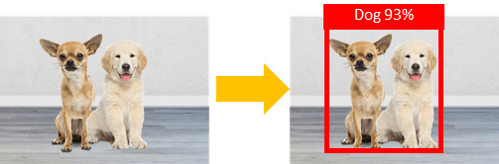

In computer vision, object detection is one of tasks that AI show remarable result. Each object detection task has different models and create different level of output. This is my wrap-up of Object detection tasks.
Image Classification detect class from image input and return class with probability.

Xception
VGG
ResNet
MobileNet
DenseNet
Confusion Matrix, Accuracy, Precision, Recall, F-measure
Image Classification with Localization create wondows to detect class from image input and return class, probability and bounding box.

Xception
VGG
ResNet
MobileNet
DenseNet
Confusion Matrix, Accuracy, Precision, Recall, F-measure

© Jingwora All rights reserved.